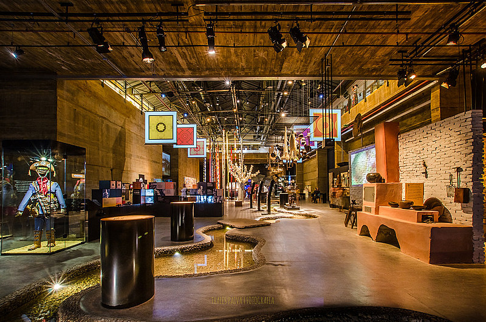

Paço do Frevo

O Paço do Frevo é um centro de referência de ações, projetos e atividades de documentação, transmissão, salvaguarda e valorização de uma das principais tradições culturais brasileiras, reconhecida como Patrimônio Imaterial da Humanidade pela Unesco: o frevo. Um lugar para estudar, criar, experimentar e vivenciar o rico universo de histórias, personalidades, memórias e linguagens artísticas. Localizado no Bairro do Recife, o Paço tem curadoria assinada por Bia Lessa. Além de se valer de conteúdos e linguagens diversas para manter vivo o ritmo que embalou a formação da identidade cultural recifense, o equipamento promove oficinas e apresentações musicais regulares em quatro pavimentos de atividades, que oferecem aos visitantes a possibilidade de experimentar o Carnaval recifense durante todo o ano.
O imóvel onde está instalado o museu é um capítulo à parte na rica história do equipamento, tendo abrigado até 1973 a Western Telegraph Company, empresa pioneira na implantação do telégrafo no Brasil. Hoje, ele faz parte do complexo turístico das cidades de Recife e Olinda e é tombado pelo IPHAN desde 1998. O museu Paço é uma iniciativa da Prefeitura do Recife, com realização da Fundação Roberto Marinho e gestão do Instituto de Desenvolvimento e Gestão - IDG. O projeto conta com o patrocínio do Banco Nacional de Desenvolvimento Econômico e Social (BNDES), da Companhia Energética de Pernambuco (Celpe), do Governo do Estado de Pernambuco, por meio de sua Secretaria de Turismo e da Empresa de Turismo de Pernambuco (Empetur), do Instituto Camargo Corrêa, do Instituto Votorantim, do Itaú, da Rede Globo e apoio do Instituto do Patrimônio Histórico e Artístico Nacional (IPHAN) e do Ministério da Cultura, por meio da Lei de Incentivo à Cultura.
Museu Cais do Sertão
O Museu Cais do Sertão é um museu interativo sobre o Sertão e Luiz Gonzaga localizado na cidade do Recife, capital de Pernambuco, Brasil.
Um dos mais modernos equipamentos culturais do Brasil, o Cais do Sertão, instalado no antigo Armazém 10 do Porto do Recife, é um local de convivência, diversão e conhecimento, polo gerador de novas ideias e experiências. Abrigando e reverenciando a obra de Luiz Gonzaga, o grande homenageado do espaço, traz para a beira-mar da capital do estado um pouco do solo rico e generoso da cultura popular do sertão. O museu teve como curadora e diretora de criação a socióloga pernambucana Isa Grinspum Ferraz, também autora do Museu da Língua Portuguesa em São Paulo. O Cais do Sertão utiliza os mais variados e inovadores recursos expositivos e tecnológicos para, em um diálogo entre a tradição e a invenção, proporcionar aos visitantes uma experiência de imersão no belo e sofrido universo sertanejo — origem e fonte de inspiração gonzaguiana — em toda a sua diversidade e complexidade.